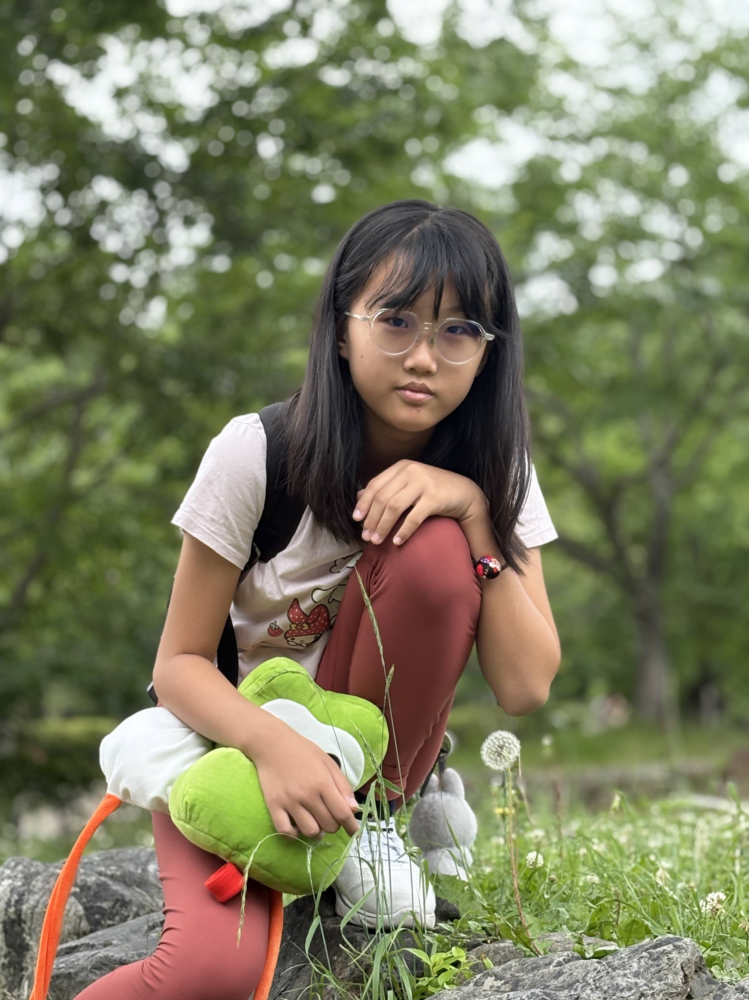

About the Artist
Hello and welcome! 🌈

I have loved drawing for as long as I can remember. Over the years, I have explored different styles and techniques — from sketching and coloured pencil work to oil painting — and I enjoy the challenge of trying something new each time.
My artwork covers a wide range of themes. I love creating warm, character-driven pieces inspired by everyday life, but I also enjoy pushing myself into darker, more unexpected territory, like in What Hides in the Dark. To me, a good artwork should make you feel something.
I also care deeply about the world around me, and art has become my way of speaking up — whether it is about protecting frogs and wetlands or caring for our environment.
Art has also been my way of unwinding, especially during the stressful period of PSLE preparation.
Through the Visual Art DSA programme, I hope to learn more, try new things, and grow alongside others who love art as much as I do.